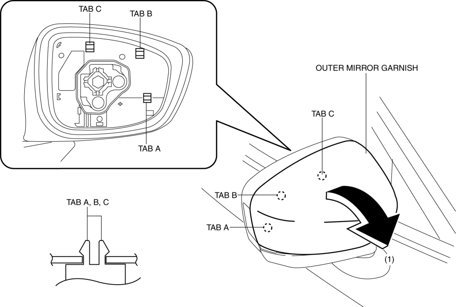
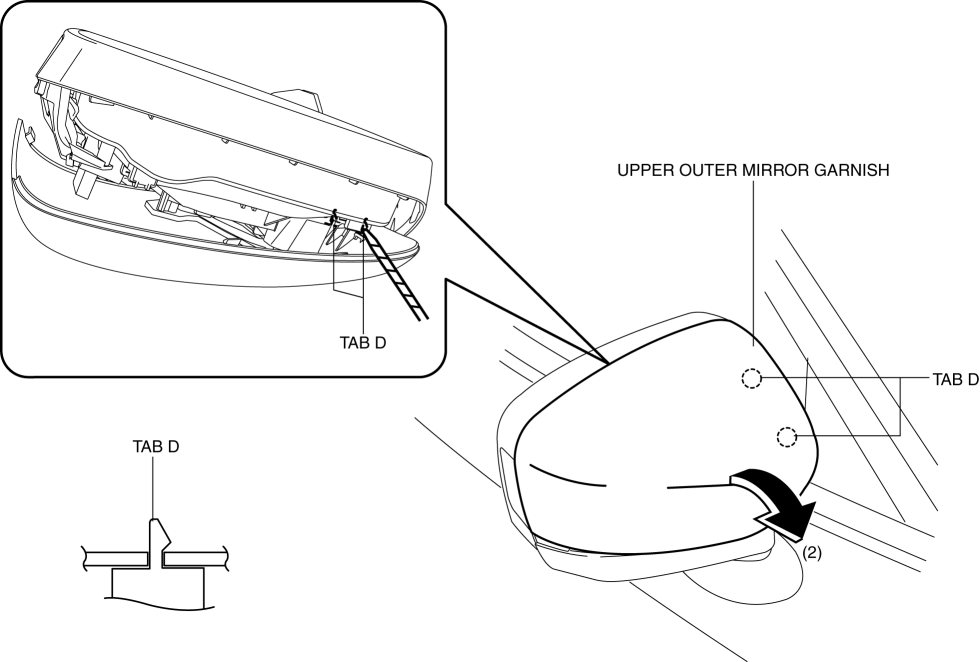

< Previous
Next >
2014 -
Mazda6 -
Body and Accessories
OUTER MIRROR GARNISH REMOVAL/INSTALLATION
1. Disconnect the negative battery cable. (See NEGATIVE BATTERY CABLE DISCONNECTION/CONNECTION [SKYACTIV-G 2.5].)
2. Remove the outer mirror glass. (See OUTER MIRROR GLASS REMOVAL.) (See OUTER MIRROR GLASS INSTALLATION.)
3. Insert a tape-wrapped flathead screwdriver into the upper outer mirror garnish and remove tab A, B, C in the direction of arrow (1).

4. Insert a tape-wrapped flathead screwdriver into the upper outer mirror garnish and remove tab D in the direction of arrow (2).

5. Install in the reverse order of removal.
< Previous
Next >
© 2012 Mazda North American Operations, U.S.A.